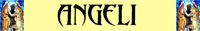
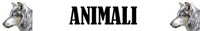
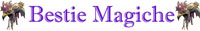
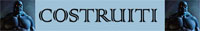
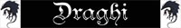
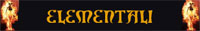
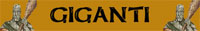
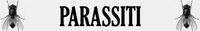
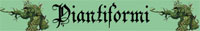
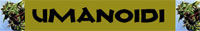

Esistono
diverse munizioni per le armi da tiro e da fuoco. In
particolare:
Frecce da Caccia
(Arco Corto ed Arco Lungo)
Frecce da Guerra
(Arco Lungo)
Dardi da Mano
(Balestra da Mano)
Dardi Leggero
(Balestra Leggera)
Dardi Pesante
(Balestra Pesante)
Sassi Levigati
(Fionda e Bastone a
Fionda)
Proiettili di Piombo
(Fionda e Bastone a
Fionda)
Macigni Levigati
(Bastone a Fionda)
Pallottole di Piombo
(Archibugio e Pistola a
Pietra Focaia)
Aghi da Cerbottana
(Cerbottana)
Aghi Uncinato da
Cerbottana
(Cerbottana)
LA ROTTURA DELLE MUNIZIONI
MAGICHE
Deve osservarsi, inoltre,
che a meno che non sia diversamente specificato tutti i proiettili incantati avranno
una possibilità di non
rompersi pari al 15% + il 10% ogni 15 xp
di valore pieno (per eccesso) in punti esperienza dell'incantamento fino ad una
possibilità
massima del 65%
per incantamenti dal valore di 75 punti esperienza o superiore.
Ad esempio, per un proiettile magico incantato con un incantamento generale +1
della scuola enchantment si tiri 1d100, con un risultato da 01-25 il proiettile
avrà automaticamente resistito, con un risultato superiore, invece, il
proiettile dovrà tirare regolarmente la sua possibilità di rottura dipendente
dalla sua tipologia).


INCANTAMENTI GENERALI
A differenza dei poteri magici delle altre scuole di magia gli incantamenti generali della scuola di incantamento rappresentano i poteri magici per eccellenza con i quali incantare ogni tipologia di armi. Si noti che a differenza degli incantamenti generali delle armi quelli sui proiettili non possono essere cumulati con altri poteri magici. Deve osservarsi, però, che a differenza degli incantamenti generali delle armi da tiro e da fuoco , i proiettili incantati con incantamenti generali possono colpire le creature immuni alle armi normali. Occorre precisare, infine, che tutti i benefici previsti da tali incantamenti non si cumuleranno con altri bonus dovuti alla fattura od ad altri incantamenti similari presenti sul proiettile.
|
Incantamento Magico +1 |
|||
|
Potenza dell'Incantamento |
Lesser Enchantment |
||
| Valore in punti esperienza | 15 xp | Valore in punti monete d'oro | 150 g.p. |
| Tipologia di arma richiesta | Qualsiasi proiettile | ||
| Descrizione del Potete Magico | |||
|
I proiettili incantati con un
incantamento
magico +1
donano i seguenti benefici: * Chi usa questi proiettili ottiene un bonus al tiro per colpire pari a +1. Questo bonus si cumula, nel limite di un solo punto, all'eventuale bonus magico o dovuto alla fattura dell'arma. Se ad esempio si utilizza una freccia +2 su un arco magico +2 si otterrà un bonus al tiro per colpire di +3. * Chi usa queste armi ottiene un bonus ai danni inferti pari a +1 (si noti che siccome si tratta di un danno magico lo stesso può superare il limite di massimale del danno dovuto al dado dell'arma). * Il fattore iniziativa base dell'arma sarà ridotto di un punto fino a raggiungere un minimo fattore iniziativa pari a +1. Questo bonus si cumula, nel limite di un solo punto, all'eventuale bonus magico o dovuto alla fattura dell'arma. A tale fattore iniziativa andranno poi regolarmente applicati gli altri modificatori all'iniziativa (tenendo sempre presente il limite del modificatore minimo di +1). * Chi usa questi proiettili ottiene un bonus di +5 al tiro sulla tabella dei critici. * Questi proiettili possono colpire creature immuni alle armi normali. |
|||
|
Incantamento Magico +2 |
|||
|
Potenza dell'Incantamento |
Superior Enchantment |
||
| Valore in punti esperienza | 38 xp | Valore in punti monete d'oro | 375 g.p. |
| Tipologia di arma richiesta | Qualsiasi arma | ||
| Descrizione del Potete Magico | |||
|
I proiettili incantati con un
incantamento
magico +2
donano i seguenti benefici: * Chi usa questi proiettili ottiene un bonus al tiro per colpire pari a +2. Questo bonus si cumula, nel limite di un solo punto, all'eventuale bonus magico o dovuto alla fattura dell'arma. Se ad esempio si utilizza una freccia +2 su un arco magico +2 si otterrà un bonus al tiro per colpire di +3. * Chi usa queste armi ottiene un bonus ai danni inferti pari a +2 (si noti che siccome si tratta di un danno magico lo stesso può superare il limite di massimale del danno dovuto al dado dell'arma). * Il fattore iniziativa base dell'arma sarà ridotto di due punti fino a raggiungere un minimo fattore iniziativa pari a +1. Questo bonus si cumula, nel limite di un solo punto, all'eventuale bonus magico o dovuto alla fattura dell'arma. A tale fattore iniziativa andranno poi regolarmente applicati gli altri modificatori all'iniziativa (tenendo sempre presente il limite del modificatore minimo di +1). * Chi usa questi proiettili ottiene un bonus di +10 al tiro sulla tabella dei critici. * Questi proiettili possono colpire creature immuni alle armi normali ed alle armi magiche fino a +1. |
|||
|
Incantamento Magico +3 |
|||
|
Potenza dell'Incantamento |
Greater Enchantment |
||
| Valore in punti esperienza | 68 xp | Valore in punti monete d'oro | 680 g.p. |
| Tipologia di arma richiesta | Qualsiasi arma | ||
| Descrizione del Potete Magico | |||
|
I proiettili incantati con un
incantamento
magico +3
donano i seguenti benefici: * Chi usa questi proiettili ottiene un bonus al tiro per colpire pari a +3. Questo bonus si cumula, nel limite di un solo punto, all'eventuale bonus magico o dovuto alla fattura dell'arma. Se ad esempio si utilizza una freccia +2 su un arco magico +2 si otterrà un bonus al tiro per colpire di +3. * Chi usa queste armi ottiene un bonus ai danni inferti pari a +3 (si noti che siccome si tratta di un danno magico lo stesso può superare il limite di massimale del danno dovuto al dado dell'arma). * Il fattore iniziativa base dell'arma sarà ridotto di tre punti fino a raggiungere un minimo fattore iniziativa pari a +1. Questo bonus si cumula, nel limite di un solo punto, all'eventuale bonus magico o dovuto alla fattura dell'arma. A tale fattore iniziativa andranno poi regolarmente applicati gli altri modificatori all'iniziativa (tenendo sempre presente il limite del modificatore minimo di +1). * Chi usa questi proiettili ottiene un bonus di +15 al tiro sulla tabella dei critici. * Questi proiettili possono colpire creature immuni alle armi normali ed alle armi magiche fino a +2. |
|||
INCANTAMENTI SPECIFICI O SETTORIALI
Oltre che con incantamenti generali, i proiettili possono essere incantati anche con incantamenti specifici o settoriali, incantamenti che rispettivamente sono stati sviluppati per combattere una singola tipologia di creature (ad es. vampiri, draghi rossi, ecc...) oppure una categoria di queste (ad es. non morti, draghi, ecc...). Si noti che a differenza delle armi, i proiettili incantati con incantamenti specifici o settoriali non possono ricevere altri poteri magici, ad eccezione degli incantamenti magici generali. In tale ultimo caso, non cumulandosi i benefici, per essere utili i primi dovranno essere di potere superiore ai secondi. Per fare un esempio, una freccia da caccia magica +1, +2 contro non morti sarà considerata un proiettile +1 contro ogni creatura e darà i benefici supplementari dell'incantamento settoriale +2 esclusivamente contro i non morti. In ogni caso, ogni oggetto può essere incantato con un unico incantamento specifico o settoriale.
A
differenza degli incantamenti generali il bonus degli
incantamenti specifici o
settoriali presente sui
proiettili si applicherà
unicamente alla Thac0 ed al Danno. In particolare:
* Chi usa questi
proiettili ottiene un bonus
al tiro per colpire contro la creatura o la categoria di creature specificata
pari al bonus
dell'incantamento. Questo bonus si cumula,
nel limite di un solo punto,
all'eventuale bonus magico o dovuto alla fattura dell'arma. Se ad esempio si
utilizza una freccia +2 su un arco magico +2 si otterrà un bonus al tiro per
colpire di +3.
* Chi usa questi proiettili
ottiene un bonus
ai danni inferti contro la
creatura o la categoria di creature specificata pari al
bonus
dell'incantamento (si noti che siccome si tratta di un danno magico lo stesso
può superare il limite di massimale del danno dovuto al dado del proiettile).
Invece, questa
tipologia di incantamenti:
* Non darà alcun beneficio al fattore
iniziativa dell'arma.
* Non darà alcun beneficio sulla tabella dei critici prodotti ai propri
avversari.
* Non permetterà di colpire
creature immuni alle armi normali od alle armi incantate anche se si tratta
della specifica creatura o categoria di creature per la quale sono stati creati.
Qualora, inoltre, un proiettile di
fattura speciale sia incantato esclusivamente con un
incantamento specifico o
settoriale, questo
non impedisce al proiettile di perdere
l'affilatura nei casi in
cui ciò si verifica (come ad es. quando deve effettuare un tiro salvezza),
continuandosi, però, ad applicare interamente il bonus magico contro
la creatura o la categorie di creature
specificata.
| Incantamento | Potenza | Punti esperienza | Monete d'oro |
| Incantamenti Specifico +1 | Lesser Minor Enchantment | 3 xp | 15 g.p. |
| Incantamenti Specifico +2 | Minor Enchantment | 5 xp | 30 g.p. |
| Incantamenti Specifico +3 | Superior Minor Enchantment | 8 xp | 60 g.p. |
| Incantamenti Specifico +4 | Greater Minor Enchantment | 11 xp | 120 g.p. |
| Incantamenti Settoriale +1 | Superior Minor Enchantment | 8 xp | 60 g.p. |
| Incantamenti Settoriale +2 | Greater Minor Enchantment | 11 xp | 100 g.p. |
| Incantamenti Settoriale +3 | Lesser Enchantment | 15 xp | 150 g.p. |
| Incantamenti Settoriale +4 | Lesser Enchantment | 23 xp | 195 g.p. |
Segue l'elenco delle categorie di mostri utilizzate nella creazione di incantamenti settoriali [1d100]
|
1-5 |
|
|
6-7 |
 |
|
8-17 |
 |
|
9-25 |
 |
|
26-30 |
 |
|
31-37 |
|
|
38-41 |
|
|
42-49 |
 |
|
50-52 |
 |
|
53-59 |
 |
|
60-62 |
|
|
63-66 |
|
|
67-75 |
|
|
78-84 |
 |
|
85-90 |
 |
|
91-100 |
 |


|
of Minor Acid Conjuration |
|||
|
Potenza dell'Incantamento |
Lesser Enchantment |
||
| Valore in punti esperienza | 15 xp | Valore in punti monete d'oro | 150 g.p. |
| Tipologia di arma richiesta | Qualsiasi proiettile | ||
| Descrizione del Potete Magico | |||
|
I proiettili incantati con
l'incantamento
of Minor
Acid Conjuration
richiamo ad esistenza un piccolo getto d'acido sul loro nemico. In
particolare questi proiettili donano il seguente beneficio: * Quando il proiettile è lanciato, se colpisce un qualsiasi bersaglio, al momento dell'impatto lo stesso richimaerà ad esistenza uno spruzzo d'acido in grado di provocare alla vittima 1d6 danni supplementari da acido. Quando ciò si verifica il proiettile utilizzato in questo modo si distruggerà automaticamente, ad eccezione del macigno levigato il quale avrà una possibilità pari al 50% di resistere all'acido (qualora resista sarà necessario verificare le normali possibilità di rottura). |
|||
|
of Major Acid Conjuration |
|||
|
Potenza dell'Incantamento |
Superior Enchantment |
||
| Valore in punti esperienza | 38 xp | Valore in punti monete d'oro | 380 g.p. |
| Tipologia di arma richiesta | Frecce da Guerra, Dardi Pesanti, Macigni Levigati | ||
| Descrizione del Potete Magico | |||
|
I proiettili incantati con
l'incantamento
of Major
Acid Conjuration
richiamo ad esistenza un piccolo ma potente getto d'acido sul loro
nemico. In particolare questi proiettili donano il seguente beneficio:
* Quando il proiettile è lanciato, se colpisce un qualsiasi bersaglio, al momento dell'impatto lo stesso richimaerà ad esistenza uno spruzzo d'acido in grado di provocare alla vittima 2d6 danni supplementari da acido. Quando ciò si verifica il proiettile utilizzato in questo modo si distruggerà automaticamente, ad eccezione del macigno levigato il quale avrà una possibilità pari al 33% di resistere all'acido (qualora resista sarà necessario verificare le normali possibilità di rottura). |
|||